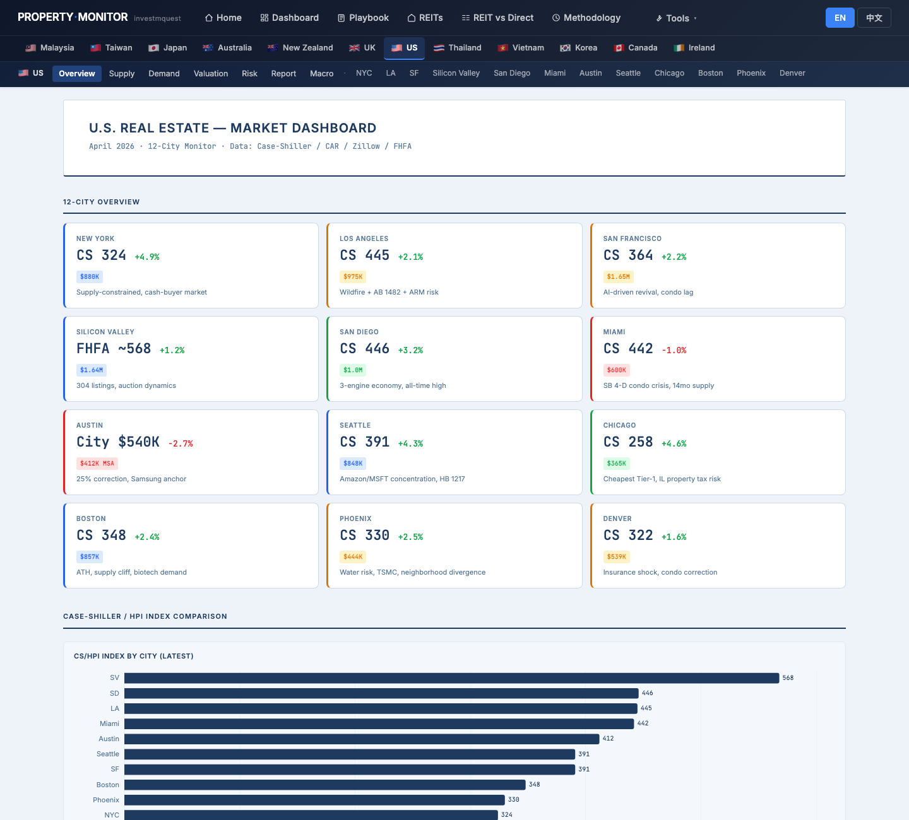
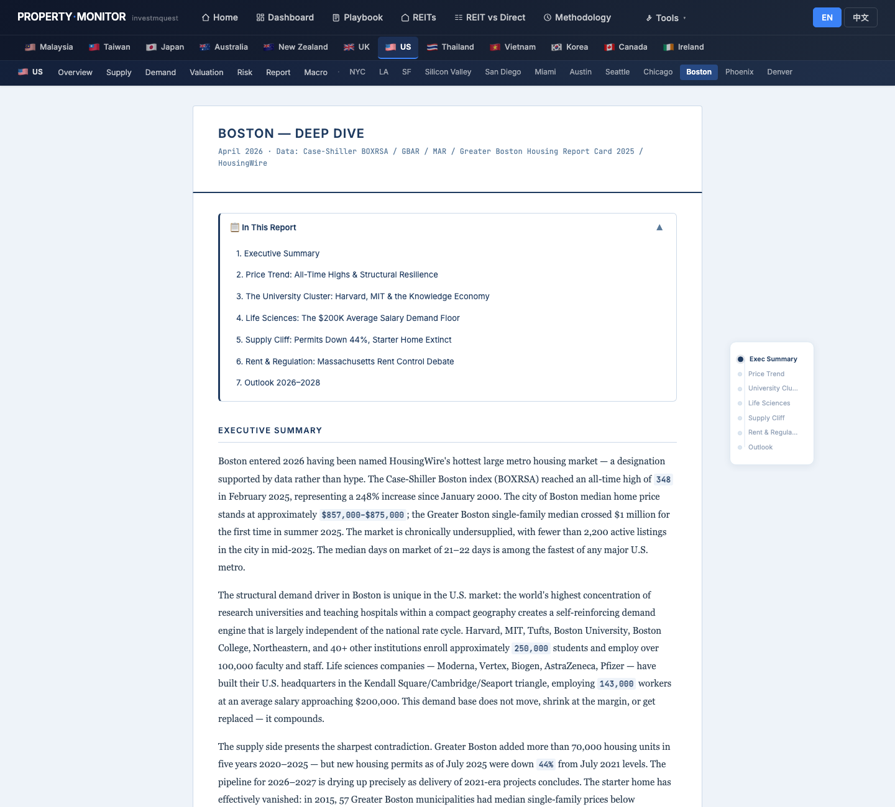
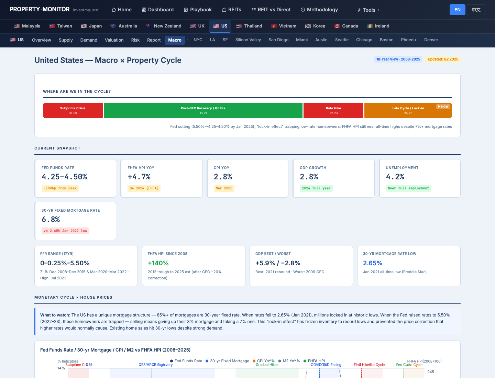
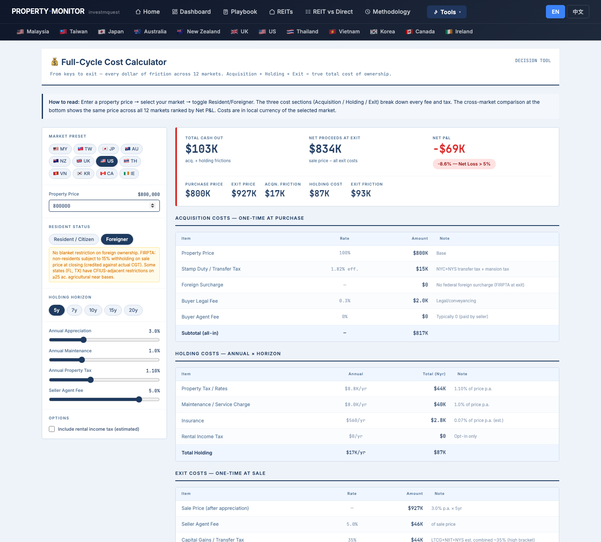
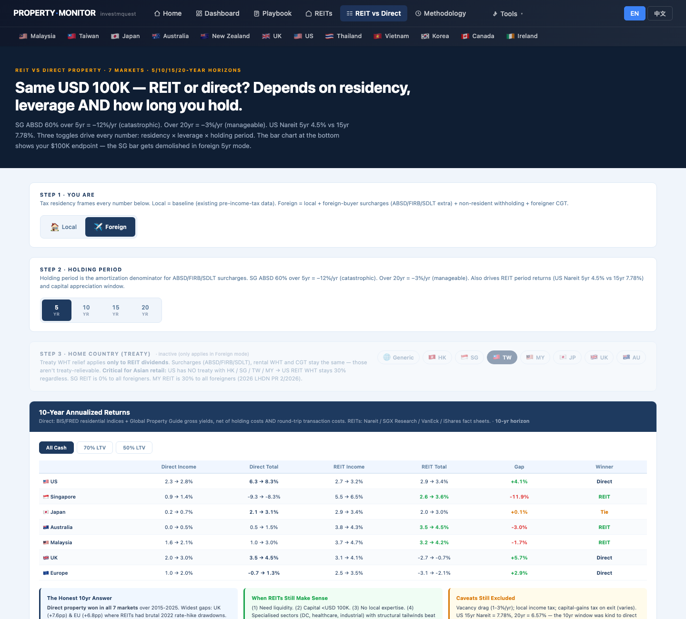
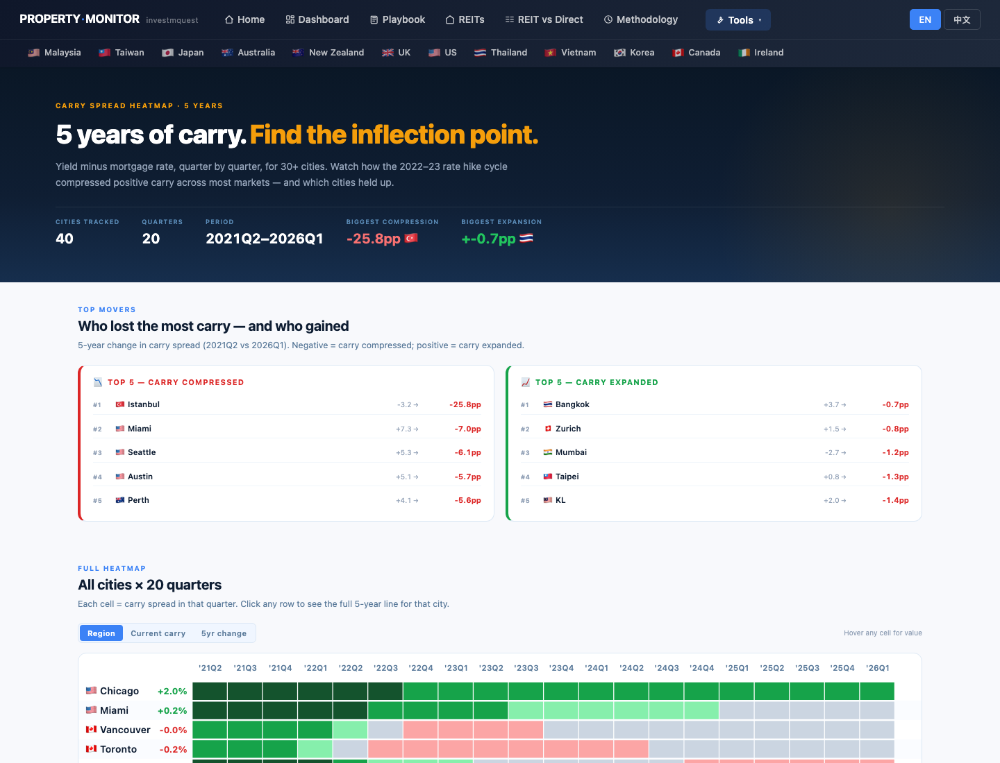
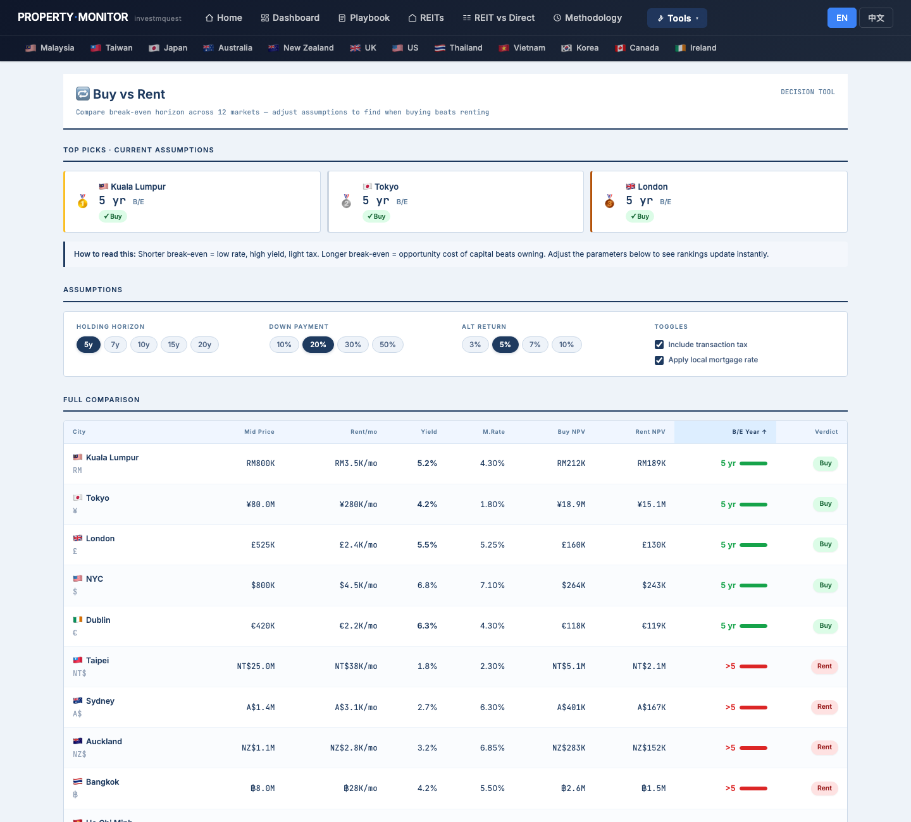
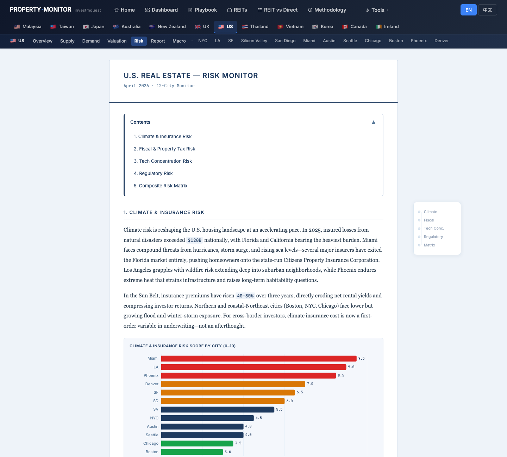
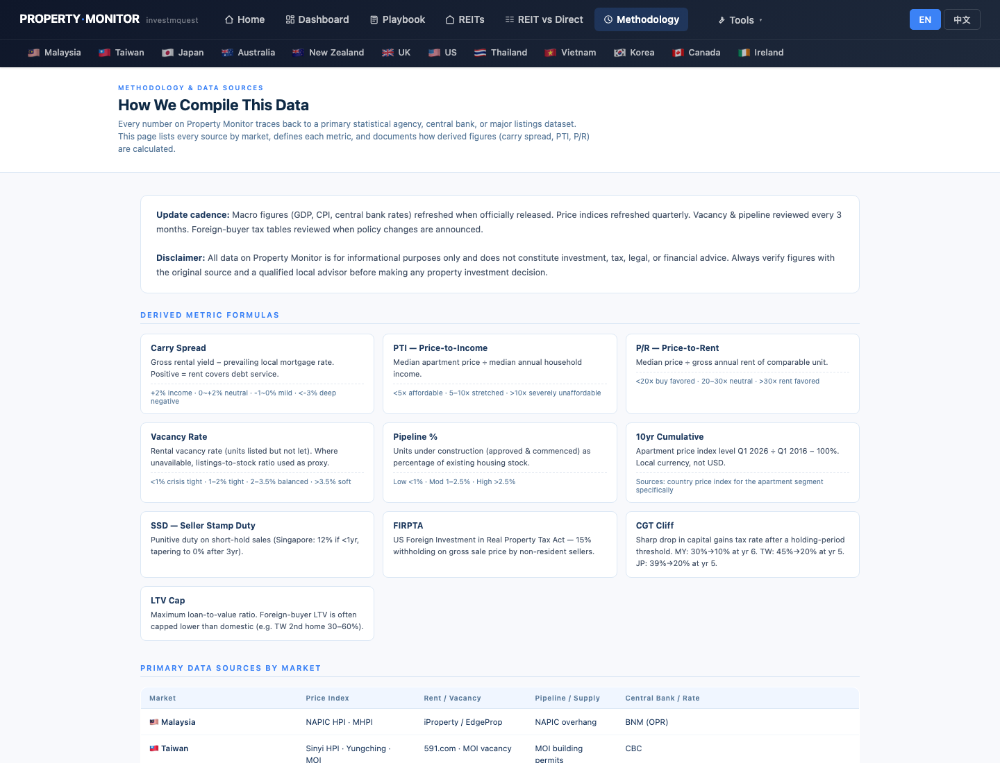

Mrs. Hsu (50, Taipei) has US$ 800K cash and a clear mission: buy a Boston-area condo for her daughter Sarah's 4-year MIT undergraduate program, then sell at graduation to partially recoup tuition. This is a short-hold use case — 4 years — which is highly unusual in global property. Most investor personas hold 5–10+ years; Mrs. Hsu's compressed horizon makes transaction costs and exit-timing supply risk far more critical than for any other persona on this site. Before committing, she uses Property Monitor to triage three countries (US / UK / AU) for university market coverage, drill into Boston, and stress-test the all-in math. This walkthrough shows which page to open first, what to click, and what each result means for a 4-year hold. It is not investment, tax, or legal advice. 許女士（50 歲，台北）手持美金 80 萬現金，目標明確：為女兒 Sarah 的 MIT 四年大學課程在波士頓附近買公寓，畢業即出售以部分回收學費。這是一個短持有案例——僅 4 年——在全球房地產中極為罕見。大多數投資者持有 5 至 10 年以上；許女士壓縮的持有期使交易成本和退出時機供給風險比本站其他任何情境都更為關鍵。在決定前，她用 Property Monitor 對三個國家（美/英/澳）的大學市場進行篩選，深入研究波士頓，並對總成本進行壓力測試。本導覽展示先打開哪一頁、點哪裡、各結果對 4 年持有的含義。本文不是投資、稅務或法律建議。
- Where does US data live on this site, and how do I get from the home page to Boston city detail?美國資料在哪？怎麼從首頁一路找到波士頓城市深度頁？
- Where is the analyst narrative — what's the story behind the US property cycle right now?哪裡能讀到分析師敘述——美國房產週期現在的故事是什麼？
- US vs UK vs AU — does this site cover all three countries so I can confirm the US is my best choice for Sarah's location?美 vs 英 vs 澳——這個網站覆蓋所有三個國家，讓我確認美國是 Sarah 所在地的最佳選擇嗎？
- What does US$ 800K actually cost over 4–5 years end-to-end as a foreign buyer — FIRPTA, agent fees, closing costs?作為外國買家，美金 80 萬 4–5 年端到端的實際總成本是多少——FIRPTA、仲介費、交割費用？
- Is buying for 4 years better than renting Sarah a normal apartment and investing the cash difference in REITs?買房 4 年是否優於租一間普通公寓，同時把差額投入 REIT？
- What's the supply pipeline 4 years out — will there be a delivery wave compressing my exit price in 2028–2029?4 年後的供給管道長什麼樣子——2028–2029 年會有交屋潮壓低我的退出價格嗎？
- How do I switch the site to 中文, and where do I save a page as PDF for sharing with my accountant?怎麼把網站切換成中文？哪裡可以把頁面存成 PDF 分享給會計師？
Mrs. Hsu's click-by-click tour — 12 stops許女士的逐步點擊旅程 — 12 個停靠點
Each stop is a real page on the site. For each, you'll see what she clicks, what the screen shows, and why it matters for a 4-year foreign-buyer hold. Follow along in another tab — every URL works. 每個停靠點都是站上的一頁實際畫面。每站告訴你她點什麼、螢幕出現什麼、為什麼對 4 年外國買家持有情境重要。建議另開分頁跟著走——所有連結都能直接點。
Land on the home page and pick the "growth / capital recovery" persona進入首頁，選「增值 / 資本回收」persona 卡
What she sees: the chosen card lights up amber with a checkmark. The growth persona reweights the world map and the Top-5 strip to rank cities by 10-year capital growth. The US cities — Boston, NYC, Silicon Valley — appear in the map's North American cluster. The scatter chart plots yield vs 10-year growth for all covered cities. 螢幕出現什麼：選中的卡片變琥珀色亮起並打勾。增值 persona 將世界地圖和 Top-5 排行依十年資本增值重排。美國城市——波士頓、紐約、矽谷——出現在地圖北美群組。散點圖將所有覆蓋城市依收益率 vs 十年增值繪點。

Scroll to the world map — cluster US / UK / AU university markets simultaneously捲到世界地圖——同時找到美 / 英 / 澳大學市場群組
What she sees: the map shows all covered cities as dots sized and colored by the selected metric. In 10yr growth mode, Boston and UK cities appear alongside Australian cities. The Top-5 strip below ranks by 10-year growth. Each city dot has a tooltip with key metrics and a "Deep dive →" link. Mrs. Hsu can see all three candidate country regions without leaving this one page. 螢幕出現什麼：地圖以所選指標對所有覆蓋城市以大小和顏色的點顯示。在十年增值模式下，波士頓和英國城市與澳洲城市並列出現。下方 Top-5 排行依十年增值排序。每個城市點有含關鍵指標的 tooltip 和「Deep dive →」連結。許女士不用離開此頁，就能看到所有三個候選國家地區。

Open the US dashboard — confirm 12-city coverage including Boston開啟美國儀表板——確認 12 城市覆蓋含波士頓
What she sees: a 3×4 grid of city KPI cards, each showing the city name, Case-Shiller index value, YoY%, and median price badge. She finds: New York (CS 324, $880K), Los Angeles (CS 445, $975K), San Francisco (CS 364, $1.65M), Silicon Valley (FHFA ~568, $1.64M), San Diego (CS 446, $1.0M), and further down: Boston (CS 348, approaching $857K–$875K city median), Seattle, Chicago, Miami, Phoenix, Denver, Austin. Each card links to that city's deep-dive page. Below the city grid, the page shows aggregate charts for US macro overview. 螢幕出現什麼：12 張城市 KPI 卡的 3×4 格，每張顯示城市名、Case-Shiller 指數值、年增率和中位價 badge。她找到：紐約（CS 324，$880K）、洛杉磯（CS 445，$975K）、舊金山（CS 364，$165萬）、矽谷（FHFA ~568，$164萬）、聖地牙哥（CS 446，$100萬），再往下：波士頓（CS 348，城市中位數接近 $857K–$875K）、西雅圖、芝加哥、邁阿密、鳳凰城、丹佛、奧斯丁。每張卡片連結到該城市的深度頁。城市格下方，頁面顯示美國總體概覽圖表。

Boston deep dive — the university cluster, supply cliff, and why it's HousingWire's hottest market波士頓深度研究——大學群聚、供給懸崖，以及為何它是 HousingWire 最熱市場
What she sees (KPI grid):
▸ CS Boston (Feb 2025) — index 348, all-time high, YoY +1.7% (BOXRSA · FRED)
▸ City Median (Jun 2025) — $857K, +1.4% YoY; Greater Boston Oct: $800K
▸ SF Median Hit $1M — Greater Boston single-family crossed $1M summer 2025, first time ever
▸ Sub-$500K Municipalities — only 3 left (down from 57 in 2015); starter home effectively extinct
▸ Life Sciences Jobs — 143,000 at ~$200K avg salary; +16,633 projected by 2029
▸ Permit Drop — -44% Jul 2025 vs Jul 2021; supply cliff looming
TOC sections: Executive Summary · Price Trend: All-Time Highs & Structural Resilience · The University Cluster: Harvard, MIT & the Knowledge Economy · Life Sciences: The $200K Average Salary Demand Floor · Supply Cliff: Permits Down 44%, Starter Home Extinct · Rent & Regulation: Massachusetts Rent Control Debate · Outlook 2026–2028.
Inline charts: CS Boston Index + YoY% (2015–2025) · Greater Boston SF vs Condo Median 2018–2025 · and additional charts in later sections.
螢幕出現什麼（KPI 格）：
▸ CS 波士頓（2025年2月） — 指數 348，歷史高點，年增 +1.7%（BOXRSA · FRED）
▸ 城市中位數（2025年6月） — $857K，年增 +1.4%；大波士頓10月：$800K
▸ 獨棟中位數突破$100萬 — 大波士頓獨棟2025年夏季首次突破 $100萬
▸ 低於$50萬城鎮 — 僅剩3個（較2015年的57個大減）；入門級住宅實際絕跡
▸ 生命科學就業 — 143,000人，均薪約 $200K；預計至2029年再增 16,633人
▸ 許可降幅 — 2025年7月較2021年7月下降 -44%；供給懸崖迫近
TOC 章節：執行摘要 · 房價走勢：歷史高點與結構韌性 · 大學群聚：哈佛、MIT與知識經濟 · 生命科學：$200K均薪需求底部 · 供給懸崖：許可下降44%，入門級住宅絕跡 · 租金與法規：麻州租管辯論 · 展望 2026–2028
內嵌圖表：CS 波士頓指數 + 年增率（2015–2025）· 大波士頓獨棟 vs 公寓中位數 2018–2025，以及後續章節圖表。

US Macro × Cycle page — where is the Fed, and what does that mean for a Taiwanese buyer financing in USD?美國總經 × 週期頁——Fed 在哪個位置，對以美元融資的台灣買家意味著什麼？
What she sees: a cycle position bar at the top of the page labelled "Where Are We in the Cycle?" — segmented as Subprime Crisis (08–09), Recovery (10–14), Reflation & Low Rate (15–19), Pandemic Surge (20–21), Rate Hike Cycle (22–23), and the current phase with a ▶ NOW marker. Below: 4 context KPI cards (Fed rate, national price index, CPI, GDP). Four historical event cards cover the key policy turning points. Multi-line ECharts show the Fed's rate path alongside CPI and GDP trajectory. A chart insight callout box interprets each macro signal for property implications. 螢幕出現什麼：頁面頂部顯示「目前週期位置」的週期位置軸——分段為次貸危機（08–09）、復甦（10–14）、再膨脹與低利率（15–19）、疫情飆漲（20–21）、升息週期（22–23），以及帶有 ▶ NOW 標記的當前階段。下方：4 張脈絡 KPI 卡（Fed 利率、全國價格指數、CPI、GDP）。4 張歷史事件卡涵蓋關鍵政策轉折點。多條折線圖展示 Fed 的利率路徑以及 CPI 和 GDP 走勢。圖表洞察框解讀每個總體信號對房市的含義。

Pipeline Cliff — will there be a delivery wave compressing Mrs. Hsu's exit price in 2028–2029?Pipeline Cliff——2028–2029 年是否會有交屋潮壓低許女士的退出價格？
What she sees: a color-coded pipeline heatmap — green = low new supply (favorable for existing owners), orange/red = heavy pipeline. Each cell shows new supply as a percentage of existing stock for that time band. Below the heatmap, a bar chart shows approved vs under-construction volume per city. An insight card summarizes the "cliff" risk — where the pipeline drops sharply after near-term completions. Boston's cell reflects the -44% permit drop she saw in the Boston deep dive. 螢幕出現什麼：顏色編碼的供給管道熱力圖——綠色 = 新供給低（對現有業主有利），橘/紅色 = 供給壓力重。每格顯示對應時段的新供給佔現有存量的百分比。熱力圖下方，長條圖顯示每個城市已核准 vs 興建中量。洞察卡匯總「懸崖」風險——供給管道在近期完工後急劇萎縮的地方。波士頓的格子反映她在波士頓深度研究中看到的 -44% 許可降幅。

Cost Calculator — US / Foreigner / 5y (closest to 4y) / US$ 800K: what does FIRPTA actually cost?Cost Calculator——美國 / 外國人 / 5y（最接近 4y）/ 美金 80 萬：FIRPTA 實際成本是多少？
What she sees: hero KPIs at the top — TOTAL CASH OUT / NET PROCEEDS AT EXIT / NET P&L verdict — plus supporting stats. Three breakdown tables:
① Acquisition — price, state transfer tax (varies by county), buyer's agent, attorney/title/escrow fees.
② Holding — property tax (Massachusetts: ~1.1–1.2% of assessed value annually), condo HOA fees, maintenance, insurance.
③ Exit — seller agent fee (~2.5–3%), FIRPTA 15% withholding on gross sale price (foreign persons), state non-resident withholding, attorney fees. Note: FIRPTA 15% is a withholding — actual tax is long-term capital gains rate on the gain; excess withholding is refunded via IRS Form 8288-B, but the liquidity lockup is real.
A stacked bar chart visualizes cost components. A 12-market comparison table shows US vs AU, UK, SG, JP, MY rows with total ownership cost side-by-side.
螢幕出現什麼：頂部 hero KPI——TOTAL CASH OUT / NET PROCEEDS AT EXIT / NET P&L 判決——加上輔助統計。三張明細表：
① Acquisition——物業價、州交易稅（依郡而異）、買方仲介費、律師/產權/托管費。
② Holding——房產稅（麻州：每年約評估值的 1.1–1.2%）、公寓 HOA 費、維護費、保險。
③ Exit——賣方仲介費（約 2.5–3%）、FIRPTA 對售出總價 15% 的預扣稅（外國人）、州非居民預扣、律師費。注意：FIRPTA 15% 是預扣——實際稅負是增值部分的長期資本利得稅率；多扣的部分通過 IRS Form 8288-B 退還，但流動性凍結是真實的。
堆疊長條圖視覺化各成本項目。12 市場比較表並排顯示美國 vs 澳洲、英國、新加坡、日本、馬來西亞的總持有成本。

REIT vs Direct — Foreign + Taiwan home country + 5yr: does buying beat REITs for a short hold?REIT vs Direct——外國人 + 台灣母國 + 5年：短持有期下買房勝過 REIT 嗎？
What she sees: Step 1 — Residency toggle (Local / Foreign), set to Foreign. Step 2 — Period toggle (5 / 10 / 15 / 20yr), set to 5yr. Step 3 — Home country toggle showing TW selected; a note explains that US has NO tax treaty with TW/HK/SG/MY → US REIT WHT stays 30% regardless of home country. The endpoint comparison table shows: for each market (US, SG, JP, AU, MY, UK, EU), Direct Income, REIT Income, Direct Total, REIT Total, Gap, Winner. The terminal value bar chart shows USD ending value for each market at 5yr. The US row in Foreign + TW mode shows the 30% WHT on US REIT dividends and the FIRPTA/surcharge overlay on direct property. 螢幕出現什麼：步驟 1——居住身分切換（本地 / 外國），設為外國。步驟 2——持有期切換（5 / 10 / 15 / 20年），設為 5年。步驟 3——母國切換顯示已選 TW；說明顯示美國與 TW/HK/SG/MY 沒有租稅協定 → 美 REIT 預扣稅無論母國如何永遠 30%。終點比較表顯示：對每個市場（美、新、日、澳、馬、英、歐），Direct Income、REIT Income、Direct Total、REIT Total、Gap、Winner。終值長條圖顯示各市場 5 年後的美元終值。外國人 + TW 模式下的美國列顯示美 REIT 股息的 30% 預扣稅以及直接房產的 FIRPTA/附加稅疊加。

Carry Heatmap — Boston carry context: US borrowing rates are high, how does this affect her scenario?Carry Heatmap——波士頓 carry 脈絡：美國借貸利率高，這如何影響她的情境？
What she sees: a multi-city heatmap table. Each cell color-coded from deep green (favorable) to red (unfavorable). US cities generally show thin or negative net carry because gross yields (~3–4% for Boston condos) are outweighed by holding costs (~2.8% for US: property tax ~1.1–1.2%, HOA, insurance, maintenance). The Growth Score column reflects the strong Boston capital appreciation track record. A bubble chart typically plots yield vs growth score by city, making the yield/growth trade-off visual. 螢幕出現什麼：多城市熱力圖表。每個格子從深綠（有利）到紅（不利）的顏色編碼。美國城市通常顯示偏薄或負的淨 carry，因為毛收益率（波士頓公寓約 3–4%）被持有成本（美國約 2.8%：房產稅約 1.1–1.2%、HOA、保險、維護）抵消。增值評分欄反映強勁的波士頓資本增值歷史紀錄。氣泡圖通常以城市繪製收益率 vs 增值評分，使收益/增值取捨可視化。

Buy vs Rent — the critical short-hold test: 4 years of buying vs 4 years of renting Sarah an apartmentBuy vs Rent——關鍵短持有測試：4 年買房 vs 4 年幫 Sarah 租公寓
What she sees: a comparison table with columns: City, Break-Even (years), Annual rent saved, Annual ownership cost, Net carry, Break-even verdict (pill colored green/yellow/red). A "Top Picks" strip above the table highlights the 3 cities with shortest break-even. Two charts: a ranking bar chart and a scatter chart (break-even vs net carry). For US at 5-year horizon with Foreigner status and 7% alternative rate: the verdict pill will be yellow or red — indicating that buying beats renting only if held longer than the break-even threshold. For a 4-year hold, the verdict is likely "Rent wins" unless price appreciation is strong. 螢幕出現什麼：含欄位的比較表：城市、損益平衡（年）、每年省下租金、每年持有成本、淨 carry、損益平衡判決（綠/黃/紅顏色膠囊標籤）。表格上方「Top Picks」條列損益平衡最短的 3 個城市。兩張圖表：排行長條圖和散點圖（損益平衡 vs 淨 carry）。外國人身分 + 5 年持有期 + 7% 替代報酬率下的美國：判決標籤可能為黃色或紅色——表示只有持有時間超過損益平衡門檻，買房才優於租房。對 4 年持有，除非房價增值強勁，否則判決可能是「租房勝出」。

US Risk Monitor — foreign-buyer regulatory risk, FIRPTA mechanics, and the climate/fiscal risk matrix美國風險監測——外國買家法規風險、FIRPTA 機制，以及氣候/財政風險矩陣
What she sees: the US Risk page has 5 sections via TOC and side nav: (1) Climate & Insurance Risk — Sun Belt vs Northeast exposure; (2) Fiscal & Property Tax Risk — state fiscal stress, property tax rates; (3) Tech Concentration Risk — SF/SV specific; (4) Regulatory Risk — rent control, zoning reform, foreign buyer restrictions; (5) Composite Risk Matrix — all 12 cities rated across Climate, Fiscal, Regulatory, Tech Concentration, Market Liquidity, Foreign Buyer Risk. Each section has a narrative paragraph and data table or chart. The risk matrix table lets her compare Boston vs NYC vs LA across 6 risk dimensions. 螢幕出現什麼：美國 Risk 頁通過目錄和 side nav 有 5 個章節：(1) 氣候與保險風險——陽光帶 vs 東北部曝險；(2) 財政與房產稅風險——州財政壓力、房產稅率；(3) 科技集中度風險——舊金山/矽谷特有；(4) 法規風險——租金管制、區域改革、外國買家限制；(5) 綜合風險矩陣——全部 12 城市依氣候、財政、法規、科技集中度、市場流動性、外國買家風險評分。每個章節有敘述段落和數據表或圖表。風險矩陣讓她比較波士頓 vs 紐約 vs 洛杉磯的 6 個風險維度。

Methodology — verify US data sources, and switch to 中文 / download PDF before briefing her accountantMethodology——驗證美國資料來源，切換中文 / 下載 PDF，準備向會計師彙報
⌘+P to print the /tools/cost-calculator page as a PDF for her records.
navbar → Tools → Methodology / 方法論。她找到來源表中的 US 列並讀取數據出處。然後她點擊右上角語言切換按鈕的 中文，將整個頁面切換為繁體中文——她要分享截圖給她的台灣會計師。最後按 ⌘+P 將 /tools/cost-calculator 頁面列印為 PDF 存檔。
What she sees: the Methodology page lists data sources per market in a table format: for the US row — Price Index = Case-Shiller (S&P CoreLogic) / FHFA · Rent/Vacancy = Zillow Research / CoStar · Transactions = NAR / CAR / local MLS · Central Bank = Federal Reserve (FRED). Each source has a methodology note explaining coverage, frequency, and known limitations. The language toggle at top-right switches all text site-wide between EN and 中文 (Traditional Chinese), with the choice saved to localStorage so subsequent pages open in the same language. The print / PDF tip: pressing ⌘+P opens the browser print dialog; the site's print stylesheet hides the navbar and toolbar so the PDF is clean. 螢幕出現什麼：Methodology 頁以表格格式列出各市場的數據來源：美國列——價格指數 = Case-Shiller（S&P CoreLogic）/ FHFA · 租金/空置率 = Zillow Research / CoStar · 交易量 = NAR / CAR / 當地 MLS · 央行 = 聯準會（FRED）。每個來源都有方法論說明，解釋覆蓋範圍、頻率和已知限制。右上角的語言切換按鈕在 EN 和中文（繁體中文）之間切換所有文字，選擇儲存到 localStorage，後續頁面在同一語言開啟。列印 / PDF 提示：按 ⌘+P 打開瀏覽器列印對話框；網站的列印樣式表會隱藏 navbar 和工具列，讓 PDF 版面乾淨。

Site cheat sheet — 6 patterns Mrs. Hsu needs to know網站小抄 — 許女士要記得的 6 個全站通用規則
These work the same way on every page across all markets — learn once, use everywhere.以下規則每一頁、每個市場都一致 — 學一次，整站通用。
Language toggle語言切換
Top-right of every page: two pill buttons EN / 中文. Choice is remembered across pages and visits via localStorage. Switch before printing for a Chinese-language PDF.每頁右上角：兩顆膠囊鈕 EN / 中文。選擇用 localStorage 跨頁、跨次造訪記住。列印前先切換以得到中文 PDF。
Tip: switch to 中文 first, then ⌘+P — the PDF will be fully in Traditional Chinese.小技巧：先切到中文再 ⌘+P——PDF 全程繁體中文。
US market navigation美國市場導航
Navbar 🇺🇸 → hover to see: Overview / Macro / Risk / and city dropdown (12 cities including Boston, NYC, Silicon Valley, Chicago, Miami, Seattle, Denver, Austin, Phoenix, San Diego, LA, SF). The Boston page has its own 7-section deep dive with side nav.Navbar 🇺🇸 → 游標停住展開：Overview / Macro / Risk / 城市下拉（12 城市含波士頓、紐約、矽谷、芝加哥、邁阿密、西雅圖、丹佛、奧斯丁、鳳凰城、聖地牙哥、洛杉磯、舊金山）。波士頓頁面有自己的 7 章節深度研究含 side nav。
There is no dedicated /us/report long-form for the US unlike AU/UK markets — the Boston page itself serves the deep-dive narrative role.美國沒有像澳洲/英國那樣的獨立 /us/report 長篇頁——波士頓頁本身就扮演深度研究敘述的角色。
Tools dropdownTools 下拉選單
All cross-market analytical tools: Home, Dashboard, REIT vs Direct, Carry Heatmap, Pipeline Cliff, Cost Calculator, Buy vs Rent, Stress Test, Yield Spread, Methodology. The last four are especially critical for Mrs. Hsu's short-hold math.所有跨市場分析工具：Home、Dashboard、REIT vs Direct、Carry Heatmap、Pipeline Cliff、Cost Calculator、Buy vs Rent、Stress Test、Yield Spread、Methodology。後四個對許女士的短持有計算尤其關鍵。
Cost Calculator minimum horizon is 5y — there is no 4y option. Real 4-year math is worse due to higher per-year amortization of transaction costs.Cost Calculator 最短持有期為 5y——沒有 4y 選項。實際 4 年的數字更糟，因為交易成本每年攤銷額更高。
KPI card colorsKPI 卡顏色
Left border color tells you the read at a glance.左邊框顏色一眼告訴你判讀。
Short-hold site limitation短持有期網站限制
The Cost Calculator and Buy vs Rent tool both have a minimum horizon of 5 years — there is no 4y tab. Mrs. Hsu uses 5y as the nearest approximation. The REIT vs Direct tool also has 5y as its shortest period. The actual 4-year transaction cost burden is higher because fixed costs amortize over fewer years.Cost Calculator 和 Buy vs Rent 工具的最短持有期均為 5 年——沒有 4y 分頁。許女士以 5y 作為最近似值。REIT vs Direct 工具的最短持有期也是 5y。實際 4 年的交易成本負擔更高，因為固定成本在更少年份內攤銷。
To estimate the 4y cost manually: take the 5y output, then subtract 1/5 of the appreciation and add back ~1/5 of acquisition transaction costs (not yet recovered in the shorter hold).手動估算 4 年成本：取 5y 輸出，減去 1/5 的增值，再加回約 1/5 的購入交易成本（在更短持有期內尚未回收）。
Save any page as PDF把任何頁面存成 PDF
Press ⌘ + P (Mac) or Ctrl + P (Windows) → choose "Save as PDF". The print stylesheet hides the navbar so the PDF looks clean. Switch to 中文 first to get a Chinese-language version for sharing with Taiwanese advisors.按 ⌘ + P（Mac）或 Ctrl + P（Windows）→ 選「另存為 PDF」。印刷樣式表會自動隱藏 navbar，PDF 版面乾淨。先切換到中文可得到中文版分享給台灣顧問。
This walkthrough has a dedicated "Download PDF" button at the bottom.本導覽底部有專屬「下載 PDF」按鈕。
What Mrs. Hsu walks away with — and what she must take outside this site許女士帶走什麼——以及哪些必須拿到站外去問
After the 12-stop tour, she has a clear separation between "questions the site answered" and "questions the site flagged but cannot answer."走完 12 站後，她能清楚分開「網站已回答的問題」與「網站幫她點出但不能回答的問題」。
✓ The site answered these for her✓ 網站已回答的
- US coverage confirmed — 12 US cities covered including Boston, NYC, Silicon Valley; Boston has a dedicated 7-section deep dive with Case-Shiller data, supply cliff analysis, and university cluster narrative美國覆蓋已確認——含波士頓、紐約、矽谷在內的 12 個美國城市；波士頓有含 Case-Shiller 數據、供給懸崖分析和大學群聚敘述的 7 章節深度研究
- Cross-country triage — US, UK, AU all visible on /home world map; confirmed site covers all three candidate countries for university housing (US/Boston, UK/London, AU/Sydney-Melbourne)跨國篩選——美、英、澳全在 /home 世界地圖可見；確認網站覆蓋所有三個大學住宅候選國家（美/波士頓、英/倫敦、澳/雪梨-墨爾本）
- Boston structural demand story — Harvard, MIT, 40+ universities, 250K students, 143K life-sciences jobs at ~$200K avg salary; demand is "largely independent of the national rate cycle"波士頓結構性需求故事——哈佛、MIT、40+ 所大學、25 萬學生、143K 生命科學就業均薪約 $200K；需求「很大程度上獨立於全國利率週期」
- Supply cliff confirmed — Boston permits down 44% (Jul 2025 vs Jul 2021); Pipeline Cliff page confirms mid-term supply is constrained, supporting exit pricing in 2028–2029供給懸崖已確認——波士頓許可下降 44%（2025年7月 vs 2021年7月）；Pipeline Cliff 頁確認中期供給受限，支撐 2028–2029 年的退出定價
- FIRPTA mechanics quantified — Cost Calculator US / Foreigner / 5y / US$800K shows FIRPTA 15% withholding on gross sale price, combined with buyer + seller agent (~5–6%), title, property tax — total transaction cost picture for a foreign buyerFIRPTA 機制已量化——Cost Calculator 美國 / 外國人 / 5y / 美金 80 萬顯示 FIRPTA 對售出總價的 15% 預扣稅，加上買賣雙方仲介費（約 5–6%）、產權費、房產稅——外國買家的交易成本總圖
- Buy vs Rent verdict — the tool makes explicit whether 4–5 years of buying beats renting at current transaction cost levels; for most US cities at short hold, the buy verdict requires meaningful appreciation to overcome friction買 vs 租判決——工具明確呈現在當前交易成本水平下，4–5 年買房是否優於租房；對大多數美國城市的短持有，買房判決需要有意義的增值才能克服摩擦
- US-TW no-treaty = 30% REIT WHT — REIT vs Direct (Foreign + TW + 5yr) confirms no treaty relief for Taiwanese investors in US REITs; FIRPTA similarly has no treaty override美台無協定 = REIT 預扣 30%——REIT vs Direct（外國人 + TW + 5yr）確認台灣投資者在美 REIT 無協定減免；FIRPTA 同樣無協定豁免
- US data sources verified — Methodology page: Case-Shiller BOXRSA (FRED), GBAR/MAR, Zillow Research, CoStar, Federal Reserve — all public domain, citable to her accountant美國數據來源已驗證——Methodology 頁：Case-Shiller BOXRSA（FRED）、GBAR/MAR、Zillow Research、CoStar、聯準會——全為公開領域，可向她的會計師引用
- Site limitation noted — minimum hold horizon in Cost Calculator and Buy vs Rent is 5y; the real 4-year scenario is marginally worse (higher per-year transaction cost burden)網站限制已說明——Cost Calculator 和 Buy vs Rent 的最短持有期為 5y；實際 4 年情境略差（每年交易成本負擔更高）
→ Questions for advisors outside this site→ 必須拿到站外問專業人士的
- FIRPTA certificate and withholding reduction — if the actual gain is less than 15% of gross price, Mrs. Hsu can apply for a withholding certificate (IRS Form 8288-B) before closing to reduce the 15% withheld; requires a US tax attorney or CPA with ITIN/non-resident filing experience → US CPA specializing in non-resident real estate taxFIRPTA 憑證和預扣稅減少——如果實際增值低於售出總價的 15%，許女士可在交割前申請預扣憑證（IRS Form 8288-B）以減少預扣的 15%；需要有 ITIN / 非居民申報經驗的美國稅務律師或 CPA → 專精非居民房地產稅的美國 CPA
- Massachusetts non-resident income tax — rental income from Sarah's roommates is taxable in Massachusetts; non-residents file Form 1-NR/PY. Mrs. Hsu must determine if she'll rent rooms to offset carry costs → Massachusetts-licensed CPA or tax attorney麻薩諸塞州非居民所得稅——Sarah 室友的租金收入在麻州需課稅；非居民申報 Form 1-NR/PY。許女士必須確定她是否出租房間以抵消持有成本 → 持麻薩諸塞州執照的 CPA 或稅務律師
- HOA due diligence — Boston condos have HOAs; pre-purchase review of HOA financials (reserve fund balance, delinquency rate, litigation history, special assessments) is mandatory → licensed home inspector or real estate attorney in BostonHOA 盡職調查——波士頓公寓有 HOA；購前必須審查 HOA 財務（儲備金餘額、拖欠率、訴訟歷史、特別徵費）→ 波士頓持牌房屋檢查員或房地產律師
- University proximity + resale liquidity analysis — which Cambridge/Boston submarket has the strongest international buyer resale pool (for a 2028–2029 exit) — Kendall Square condos vs Back Bay vs Cambridge side? → local Boston buyer's agent with track record in the university/international buyer market大學毗鄰性 + 轉售流動性分析——哪個劍橋/波士頓子市場的國際買家轉售池最強（對 2028–2029 年退出而言）——Kendall Square 公寓 vs 後灣 vs 劍橋側？→ 在大學/國際買家市場有記錄的波士頓本地買方仲介
- F-1 student housing eligibility — MIT may have rules about off-campus housing, and Sarah's F-1 student visa status may have income reporting implications if the unit is jointly used → MIT international students office + immigration attorneyF-1 學生住宅資格——MIT 可能有校外住宿規定，如果公寓由 Sarah 共同使用，F-1 學生簽證狀態可能有收入申報含義 → MIT 國際學生辦公室 + 移民律師
- TWD/USD exchange rate hedging — Mrs. Hsu is investing TWD into a USD asset; a 10% USD depreciation vs TWD by graduation would reduce the USD-denominated gain when repatriated. Options: forward contract, USD-denominated investment account → Taiwanese bank FX desk or private banker台幣/美元匯率避險——許女士將台幣投入美元資產；若畢業時美元兌台幣貶值 10%，返還台灣時的美元增值就會縮水。選項：遠期合約、美元計價投資帳戶 → 台灣銀行外匯部門或私人銀行家
The site's best-supported call for Mrs. Hsu站上資料能支持的最佳選項 — 給徐太太
Not a personalized recommendation — a single, opinionated call assembled only from data this site already shows in SECTIONS 01–04.非個人化推薦 — 是從 SECTION 01–04 站上資料推導出的單一明確建議。
✓ Pre-commit checklist (from site data)✓ 進場前 checklist（站上資料能驗證的）
/us/boston.html: Cambridge MA median 1-bed price within US$650K range at offer week./us/boston.html：Cambridge MA 1-bed 中位價在出價週仍在 US$650K 區間。/us/Carry Heatmap: Cambridge 5-year direction stable or up, rental yield positive./us/Carry Heatmap：Cambridge 5 年方向持平或上行、租金 yield 為正。- Pipeline Cliff Boston metro not in DANGER tier (supply absorbable in 4-year horizon).Boston metro Pipeline Cliff 不在 DANGER（4 年期供給可去化）。
- Risk page Boston: rental regulation / rent control change risk monitored.Risk 頁 Boston：租賃法規 / 租金管制變動風險已監控。
- Cost Calculator 4-year total cost vs MIT dorm + market rent comparison — own must beat rent by ≥ 1.5×.Cost Calculator 4 年總成本 vs MIT 宿舍 + 市場租金 — 買必須勝租 ≥ 1.5 倍。
→ Off-site next steps (the site cannot answer)→ 走出站外的下一步（站上無法回答的）
- US tax CPA — non-resident alien filing, FIRPTA withholding on exit, ITIN application, state vs federal split.美國稅務 CPA — 非居民申報、出售 FIRPTA 預扣、ITIN 申請、州/聯邦稅分割。
- Mortgage broker (foreign-national programs) — typically 30–40% down, rate 1–2% above prime; lock terms before offer.房貸經紀（foreign-national 方案） — 一般 30-40% 自備、利率高於 prime 1-2%；出價前先 lock。
- Massachusetts attorney — title, P&S agreement, condo association docs, special assessment history.麻州律師 — 產權、買賣合約、管委會文件、特別 assessment 歷史。
- Property manager / leasing agent — needed only if converting to rental at year 4; MIT-area leasing pipeline is summer-loaded.物管 / 租賃經紀 — 只在第 4 年轉租時需要；MIT 周邊招租潮集中在夏季。
- HOA documents review — pending assessments, reserve fund ratio, pet/rental restrictions for future flexibility.管委會文件 review — 待繳 assessment、reserve fund 比、寵物/出租限制（未來彈性）。
A 1-bed condo in walk-to-MIT Cambridge is the single call most consistent with a 4-year study horizon. Year-4 exit is the planned move — converting to rental requires a separate decision the site flags but does not solve.步行 MIT 的 Cambridge 1-bed 公寓是「4 年就學期」最一致的選項。第 4 年 exit 是預設動作；如要改為出租，是另一條站上有 flag 但不解決的決策。